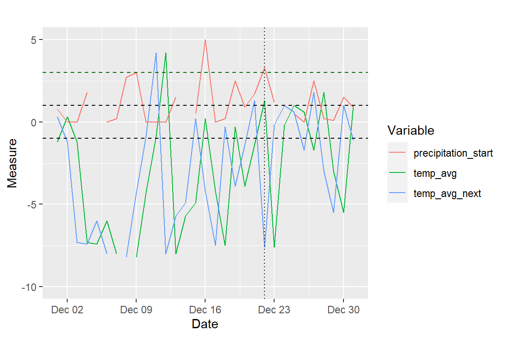
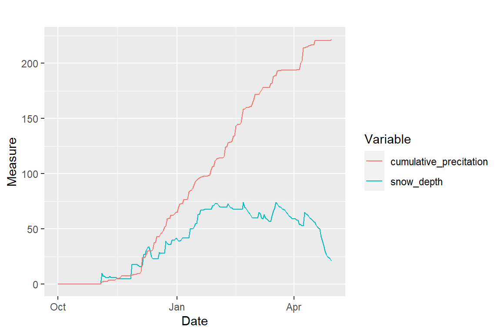
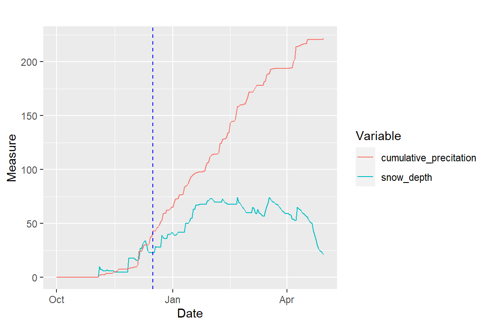
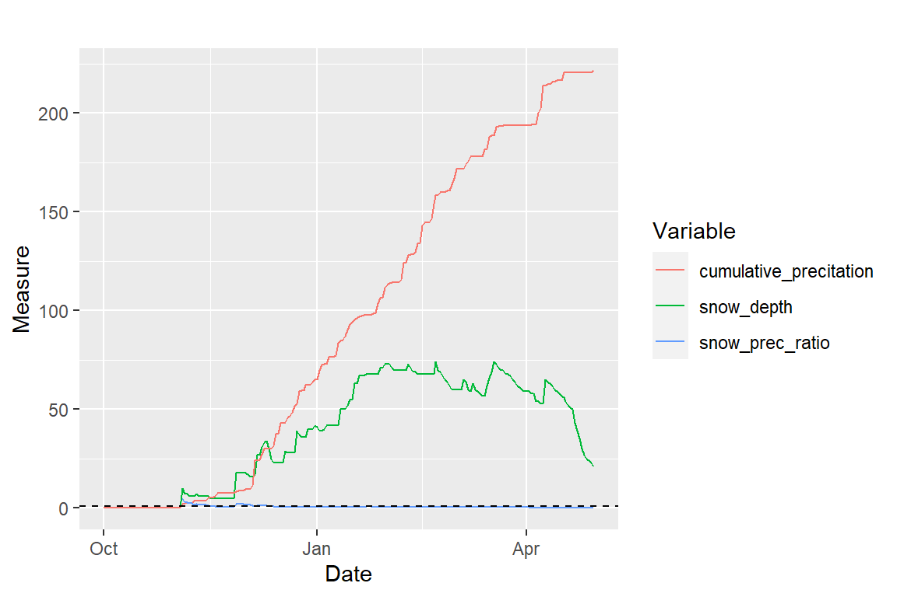

witch_start.RmdClimate and weather conditions are changing continuously and pose several challanges for humans and the biodiversity. However, understand which changes happen every year from long time series of meteorological measurements is not easy. The main purpose of the witch package is to calculate some weather indices based on common weather data (temperature, precipitation, snow depth). The package was designed with the Swedish reindeer husbandry in mind, a system where semi-domesticated reindeer live with Sami herders, in which winter conditions can influence both reindeer and people. However, it can also be useful for understanding winter conditions in other contexts.
You can install the package using devtools::install_github() function, then load the package using the function library(). We also load the tidyverse set of packages that is useful for data manipulation and plotting in this vignette.
To understand what data is used in the analysis, we’ll take a look at the dataset weather_mittadalen. This corresponds to weather data collected in meteorological stations in to Mittådalen Sami reindeer herding district, in Sweden. It contains time series of daily snow_depth, precipitation, and minimum, maximum, and average temperature, from winters in the period 2008-2020. To know more information about the dataset, see ?weather_mittadalen. There is also another dataset from a neighboring Sami district, Tåssåsen, called weather_tassasen.
data(weather_mittadalen) head(weather_mittadalen) #> # A tibble: 6 x 7 #> date year snow_depth prec temp_min temp_max temp_avg #> <dttm> <dbl> <dbl> <dbl> <dbl> <dbl> <dbl> #> 1 2007-10-01 00:00:00 2008 NA 0.4 6.2 9.9 NA #> 2 2007-10-02 00:00:00 2008 NA 0 4.2 10.1 NA #> 3 2007-10-03 00:00:00 2008 NA 0 0.2 13.1 NA #> 4 2007-10-04 00:00:00 2008 NA 0 -2.6 11 NA #> 5 2007-10-05 00:00:00 2008 NA 0 -2.9 12.3 NA #> 6 2007-10-06 00:00:00 2008 NA 0 -4.5 12.8 NA
Explain here the idea behind the ratios between cumulative precipitation and snow depth, as well as the events 3 and 4 from Lundqvist et al (2007).
The main function of the package is called analyze_weather. It calculates cumulative precipitation, the ratio between cumulative precipitation and snow depth, and identifies events 3 and 4 according to Lundqvist et al (2007), which represent possible formations of ice crust layers, which make it difficult for reindeer to forage and find food.
The function can wither analyze the whole time series of the winter consider only what comes after the first permanent snow. Maybe both things can be important for understanding whether the weather was good or bad in a given winter. The identification of the first permanent snow is done by the function find_date_permanent_snow().
The function analyze_weather() also uses the functions identify_winter_event3() and identify_winter_event4() to identify these events aforementioned.
Once these analyses are done, beyond looking into values, the function plot_weather() may be used to explore relationships between the input and derived variables.
First we select a given year of data, 2014, to understand how the analysis work. According the reindeer herders from this district, this was a hard year because of the harsh weather conditions.
# select one year weather <- weather_mittadalen %>% dplyr::filter(year == 2014) head(weather) #> # A tibble: 6 x 7 #> date year snow_depth prec temp_min temp_max temp_avg #> <dttm> <dbl> <dbl> <dbl> <dbl> <dbl> <dbl> #> 1 2013-10-01 00:00:00 2014 0 0 -4.5 12.3 2.1 #> 2 2013-10-02 00:00:00 2014 0 0 -4.2 12.5 2.4 #> 3 2013-10-03 00:00:00 2014 0 0 -4.4 9.4 3.5 #> 4 2013-10-04 00:00:00 2014 0 0.2 1.5 7 4.4 #> 5 2013-10-05 00:00:00 2014 0 0.5 3.9 10.4 6 #> 6 2013-10-06 00:00:00 2014 0 0.7 -3 9.6 4.3
Then we run the function to analyze the weather conditions in this winter.
# analyze weather weather_condition <- with(weather, analyze_weather(date, snow_depth, prec, temp_min, temp_max, temp_avg, start = "first_permanent_snow"))
When we look at the results, we see a table with time series of input and derived variables calculated, as well as some summaries of the number of events and duration of events 3 and 4.
weather_condition #> $weather_indices #> # A tibble: 212 x 13 #> date snow_depth precipitation_s~ temp_min temp_max temp_avg #> <dttm> <dbl> <dbl> <dbl> <dbl> <dbl> #> 1 2013-10-01 00:00:00 0 0 -4.5 12.3 2.1 #> 2 2013-10-02 00:00:00 0 0 -4.2 12.5 2.4 #> 3 2013-10-03 00:00:00 0 0 -4.4 9.4 3.5 #> 4 2013-10-04 00:00:00 0 0 1.5 7 4.4 #> 5 2013-10-05 00:00:00 0 0 3.9 10.4 6 #> 6 2013-10-06 00:00:00 0 0 -3 9.6 4.3 #> 7 2013-10-07 00:00:00 0 0 2 13.9 8.4 #> 8 2013-10-08 00:00:00 0 0 5.7 14.5 10.7 #> 9 2013-10-09 00:00:00 0 0 3.7 11.8 7.6 #> 10 2013-10-10 00:00:00 0 0 -2.1 6.5 2.1 #> # ... with 202 more rows, and 7 more variables: cumulative_precitation <dbl>, #> # prec_snow_ratio <dbl>, prec_snow_diff <dbl>, snow_prec_ratio <dbl>, #> # snow_prec_diff <dbl>, events3 <dbl>, events4 <dbl> #> #> $events3 #> $events3$events3 #> [1] 0 0 0 0 0 0 0 0 0 0 0 0 0 0 0 0 0 0 0 0 0 0 0 0 0 0 0 0 0 0 0 0 0 0 0 0 0 #> [38] 0 0 0 0 0 0 0 0 0 0 0 0 0 0 0 0 0 0 0 0 0 0 0 0 0 0 0 0 0 0 0 0 0 0 0 0 0 #> [75] 0 0 1 0 0 0 0 0 0 0 1 0 0 0 0 0 0 0 0 0 0 0 0 0 0 0 0 0 0 0 0 0 0 0 0 0 0 #> [112] 0 0 0 0 0 0 0 0 0 0 0 0 0 0 0 0 0 0 0 0 0 0 0 0 0 0 0 0 0 0 0 0 0 0 0 0 0 #> [149] 0 0 0 0 0 0 0 0 0 0 0 0 0 0 0 0 1 0 0 0 0 0 0 0 0 0 0 0 0 0 0 0 0 0 0 0 0 #> [186] 0 0 0 0 0 0 0 0 0 0 0 0 0 0 0 0 0 0 0 0 0 0 0 0 0 0 0 #> #> $events3$n_days #> [1] 3 #> #> $events3$n_events3 #> [1] 3 #> #> $events3$duration_events3 #> [1] 1 1 1 #> #> $events3$event_dates #> [1] "2013-12-16 UTC" "2013-12-24 UTC" "2014-03-14 UTC" #> #> $events3$n_event3_date #> [1] 0 0 0 0 0 0 0 0 0 0 0 0 0 0 0 0 0 0 0 0 0 0 0 0 0 0 0 0 0 0 0 0 0 0 0 0 0 #> [38] 0 0 0 0 0 0 0 0 0 0 0 0 0 0 0 0 0 0 0 0 0 0 0 0 0 0 0 0 0 0 0 0 0 0 0 0 0 #> [75] 0 0 1 0 0 0 0 0 0 0 2 0 0 0 0 0 0 0 0 0 0 0 0 0 0 0 0 0 0 0 0 0 0 0 0 0 0 #> [112] 0 0 0 0 0 0 0 0 0 0 0 0 0 0 0 0 0 0 0 0 0 0 0 0 0 0 0 0 0 0 0 0 0 0 0 0 0 #> [149] 0 0 0 0 0 0 0 0 0 0 0 0 0 0 0 0 3 0 0 0 0 0 0 0 0 0 0 0 0 0 0 0 0 0 0 0 0 #> [186] 0 0 0 0 0 0 0 0 0 0 0 0 0 0 0 0 0 0 0 0 0 0 0 0 0 0 0 #> #> $events3$events3_begin #> [1] 0 0 0 0 0 0 0 0 0 0 0 0 0 0 0 0 0 0 0 0 0 0 0 0 0 0 0 0 0 0 0 0 0 0 0 0 0 #> [38] 0 0 0 0 0 0 0 0 0 0 0 0 0 0 0 0 0 0 0 0 0 0 0 0 0 0 0 0 0 0 0 0 0 0 0 0 0 #> [75] 0 0 1 0 0 0 0 0 0 0 1 0 0 0 0 0 0 0 0 0 0 0 0 0 0 0 0 0 0 0 0 0 0 0 0 0 0 #> [112] 0 0 0 0 0 0 0 0 0 0 0 0 0 0 0 0 0 0 0 0 0 0 0 0 0 0 0 0 0 0 0 0 0 0 0 0 0 #> [149] 0 0 0 0 0 0 0 0 0 0 0 0 0 0 0 0 0 0 0 0 0 0 0 0 0 0 0 0 0 0 0 0 0 0 0 0 0 #> [186] 0 0 0 0 0 0 0 0 0 0 0 0 0 0 0 0 0 0 0 0 0 0 0 0 0 0 0 #> #> $events3$n_days_begin #> [1] 2 #> #> $events3$n_events3_begin #> [1] 2 #> #> $events3$duration_events3_begin #> [1] 1 1 #> #> $events3$event_dates_begin #> [1] "2013-12-16 UTC" "2013-12-24 UTC" "2014-03-15 UTC" #> #> $events3$n_event3_date_begin #> [1] 0 0 0 0 0 0 0 0 0 0 0 0 0 0 0 0 0 0 0 0 0 0 0 0 0 0 0 0 0 0 0 0 0 0 0 0 0 #> [38] 0 0 0 0 0 0 0 0 0 0 0 0 0 0 0 0 0 0 0 0 0 0 0 0 0 0 0 0 0 0 0 0 0 0 0 0 0 #> [75] 0 0 1 0 0 0 0 0 0 0 2 0 0 0 0 0 0 0 0 0 0 0 0 0 0 0 0 0 0 0 0 0 0 0 0 0 0 #> [112] 0 0 0 0 0 0 0 0 0 0 0 0 0 0 0 0 0 0 0 0 0 0 0 0 0 0 0 0 0 0 0 0 0 0 0 0 0 #> [149] 0 0 0 0 0 0 0 0 0 0 0 0 0 0 0 0 0 0 0 0 0 0 0 0 0 0 0 0 0 0 0 0 0 0 0 0 0 #> [186] 0 0 0 0 0 0 0 0 0 0 0 0 0 0 0 0 0 0 0 0 0 0 0 0 0 0 0 #> #> #> $events4 #> $events4$events4 #> [1] 0 0 0 0 0 0 0 0 0 0 0 0 0 0 0 0 0 0 0 0 0 0 0 0 0 #> [26] 0 0 0 0 0 0 0 0 0 0 0 0 0 0 0 0 0 0 0 0 0 0 0 0 0 #> [51] 0 0 0 0 0 0 0 0 0 0 0 0 0 0 0 0 0 0 0 0 0 0 0 0 0 #> [76] 0 0 0 0 0 0 0 1 0 0 0 0 0 0 0 0 0 0 0 0 0 0 0 0 0 #> [101] 0 0 0 0 0 0 0 0 0 0 0 0 0 0 0 0 0 0 0 0 0 0 0 0 0 #> [126] 0 0 0 0 0 0 0 0 0 0 0 0 0 0 0 0 0 0 0 0 0 0 0 0 0 #> [151] 0 0 0 0 0 0 0 0 0 0 0 0 0 0 0 0 0 0 0 0 0 0 0 0 0 #> [176] 0 0 0 0 0 0 0 0 0 0 0 0 0 0 0 0 0 0 0 0 0 0 0 0 0 #> [201] 0 0 0 0 0 0 0 0 0 0 0 NA #> #> $events4$n_days #> [1] 1 #> #> $events4$n_events4 #> [1] 1 #> #> $events4$duration_events4 #> [1] 1 #> #> $events4$event_dates #> [1] "2013-12-22 UTC" #> #> $events4$n_event4_date #> [1] 0 0 0 0 0 0 0 0 0 0 0 0 0 0 0 0 0 0 0 0 0 0 0 0 0 0 0 0 0 0 0 0 0 0 0 0 0 #> [38] 0 0 0 0 0 0 0 0 0 0 0 0 0 0 0 0 0 0 0 0 0 0 0 0 0 0 0 0 0 0 0 0 0 0 0 0 0 #> [75] 0 0 0 0 0 0 0 0 1 0 0 0 0 0 0 0 0 0 0 0 0 0 0 0 0 0 0 0 0 0 0 0 0 0 0 0 0 #> [112] 0 0 0 0 0 0 0 0 0 0 0 0 0 0 0 0 0 0 0 0 0 0 0 0 0 0 0 0 0 0 0 0 0 0 0 0 0 #> [149] 0 0 0 0 0 0 0 0 0 0 0 0 0 0 0 0 0 0 0 0 0 0 0 0 0 0 0 0 0 0 0 0 0 0 0 0 0 #> [186] 0 0 0 0 0 0 0 0 0 0 0 0 0 0 0 0 0 0 0 0 0 0 0 0 0 0 #> #> $events4$events4_begin #> [1] 0 0 0 0 0 0 0 0 0 0 0 0 0 0 0 0 0 0 0 0 0 0 0 0 0 0 0 0 0 0 0 0 0 0 0 0 0 #> [38] 0 0 0 0 0 0 0 0 0 0 0 0 0 0 0 0 0 0 0 0 0 0 0 0 0 0 0 0 0 0 0 0 0 0 0 0 0 #> [75] 0 0 0 0 0 0 0 0 1 0 0 0 0 0 0 0 0 0 0 0 0 0 0 0 0 0 0 0 0 0 0 0 0 0 0 0 0 #> [112] 0 0 0 0 0 0 0 0 0 0 0 0 0 0 0 0 0 0 0 0 0 0 0 0 0 0 0 0 0 0 0 0 0 0 0 0 0 #> [149] 0 0 0 0 0 0 0 0 0 0 0 0 0 0 0 0 0 0 0 0 0 0 0 0 0 0 0 0 0 0 0 0 0 0 0 0 0 #> [186] 0 0 0 0 0 0 0 0 0 0 0 0 0 0 0 0 0 0 0 0 0 0 0 0 0 0 0 #> #> $events4$n_days_begin #> [1] 1 #> #> $events4$n_events4_begin #> [1] 1 #> #> $events4$duration_events4_begin #> [1] 1 #> #> $events4$event_dates_begin #> [1] "2013-12-22 UTC" #> #> $events4$n_event4_date_begin #> [1] 0 0 0 0 0 0 0 0 0 0 0 0 0 0 0 0 0 0 0 0 0 0 0 0 0 0 0 0 0 0 0 0 0 0 0 0 0 #> [38] 0 0 0 0 0 0 0 0 0 0 0 0 0 0 0 0 0 0 0 0 0 0 0 0 0 0 0 0 0 0 0 0 0 0 0 0 0 #> [75] 0 0 0 0 0 0 0 0 1 0 0 0 0 0 0 0 0 0 0 0 0 0 0 0 0 0 0 0 0 0 0 0 0 0 0 0 0 #> [112] 0 0 0 0 0 0 0 0 0 0 0 0 0 0 0 0 0 0 0 0 0 0 0 0 0 0 0 0 0 0 0 0 0 0 0 0 0 #> [149] 0 0 0 0 0 0 0 0 0 0 0 0 0 0 0 0 0 0 0 0 0 0 0 0 0 0 0 0 0 0 0 0 0 0 0 0 0 #> [186] 0 0 0 0 0 0 0 0 0 0 0 0 0 0 0 0 0 0 0 0 0 0 0 0 0 0 0
To further explore these results, we first look into the formation of ice crust using the type of event 3. If we want to know the total number of days when there was ice crust formation, the number of events, and the duration of these events, we can use the functions n_days(), n_events(), and duration_event(). These functions can be calculated for the whole winter or only for the first half of the winter, if the argument first_half = TRUE. This is interesting because the formation of ice crust under or above the snow is generally more critical for reindeer and reindeer herders in the beginning of the winter season.
# number of days of events 3 n_days(weather_condition, event = 3) #> [1] 2 # but if we condider the whole winter, there is one event more n_days(weather_condition, event = 3, first_half = F) #> [1] 3 # number of events of type 3 n_events(weather_condition, event = 3) #> [1] 2 # duration of events duration_event(weather_condition, event = 3) #> [1] 1 1
Other information can be obtained from the output of the analyze_weather() functions. For example, we can have the date when each event starts.
weather_condition$events3$event_dates #> [1] "2013-12-16 UTC" "2013-12-24 UTC" "2014-03-14 UTC"
We can also count the number of events 4, for instance. In this year, there was a single event, in December. We will plot it to see the day when the temperature drops from more than +1°C to less than -1°C in the following day, and when the precipitation is higher than 3mm, which are the conditions for event 4.
# we can also calculate the number of events 4 n_events(weather_condition, event = 4, first_half = T) #> [1] 1 # copy output object to_plot <- weather_condition # have a time series for the following day and # select only the month of december to ease visualization to_plot$weather_indices <- to_plot$weather_indices %>% dplyr::mutate(temp_avg_next = c(temp_avg[-1], NA)) %>% dplyr::filter(lubridate::month(date) == 12) when_event4 <- weather_condition$events4$event_dates_begin # function plot_weather, explained below to_plot %>% plot_weather(term = c("temp_avg", "prec", "temp_avg_next")) + geom_hline(yintercept = c(-1,1), linetype = 2) + geom_hline(yintercept = 3, linetype = 2, color = "darkgreen") + geom_vline(xintercept = when_event4, linetype = 3) + ylim(-10, 5)

In the plot above, the horizontal lines represent the limits of +1 and +1°C for temperature and 3 mm for precipitation, and the verical line represents the date the date when the ice crust (event 4) was formed. This figure uses the function plot_weather(), that we explain below.
To plot variables, we use the function plot_weather(). Below we plot some of the input and derived variables for this winter.
# Snow depth and precipitation plot_weather(weather_condition, term = c("snow_depth", "precip"))
# Snow depth and cumulative precipitation plot_weather(weather_condition, term = c("snow_de", "cum"))

# Snow depth and cumulative precipitation, showing when the events 3 happened plot_weather(weather_condition, term = c("snow_de", "cum"), add_events = "events3")

# Snow depth, cumulative precipitation, and the ratio snow_depth/cumulative_precipitation plot_weather(weather_condition, term = c("snow_de", "cum", "snow_prec_ratio"))

In the last plot it is almost impossible to observe the ratio between the variables, because the scale is very small compared to the input variables. In this case, we can add a multiplication factor for each term. For instance, we can divide snow depth and precipitation for 100 to represent them in meters instead of milimiters, as we do below.
plot_weather(weather_condition, term = c("snow_de", "cum", "snow_prec_ratio"), factor_mult = c(.01,.01,1), add_events = "events3")